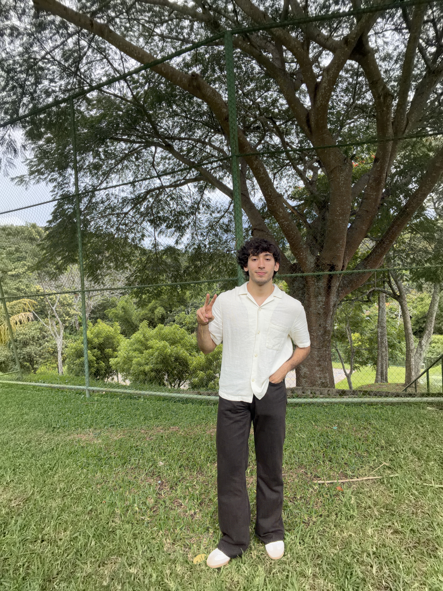

Origen y Trayectoria

Nací el 27 de junio de 2006 en la Casa de la Salud de Santa Tecla, y he vivido en Armenia, Sonsonate desde que nací. A lo largo de mi vida he combinado mis raíces locales con una fuerte vocación por la tecnología, el orden y la gestión de proyectos empresariales.
Actualmente me encuentro cursando el segundo año de Ingeniería de Software y Negocios Digitales en la ESEN, buscando fusionar el desarrollo técnico con una visión estratégica de negocios.
Formación Académica
Educación Básica (1° a 9° grado) Escuela Alberto Guerra Trigueros
Bachillerato Técnico Contabilidad - Instituto Católico Técnico Vocacional Jesús Obrero (Ateos)
Educación Superior Ingeniería de Software y Negocios Digitales - ESEN (2° año)
Gustos y Hobbies
Entretenimiento
Me encanta ver series, disfruto enormemente con las sagas de películas (especialmente Harry Potter) y soy fanático de los superhéroes, siendo Spiderman mi favorito.
Estilo y Actividad
Mi color favorito es el verde musgo y disfruto mantener un estilo de vida activo y saludable asistiendo regularmente al gimnasio.
Gastronomía
Tengo una gran pasión por la cocina y la repostería, disfrutando el proceso de crear y elaborar diferentes platillos y postres.
Metas y Sueños
Entre mis mayores sueños se encuentra viajar por el mundo, con un interés especial en visitar los países nórdicos. En el ámbito profesional, aspiro a fundar mi propia empresa de tecnología o desempeñarme en un puesto de gestión de proyectos para otras compañías, sin dejar de lado el sueño de tener mi propio restaurante y cafetería.